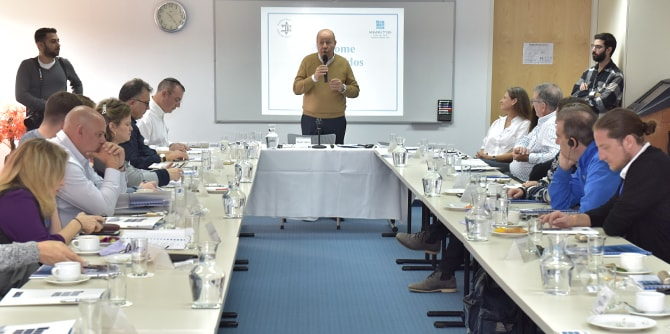
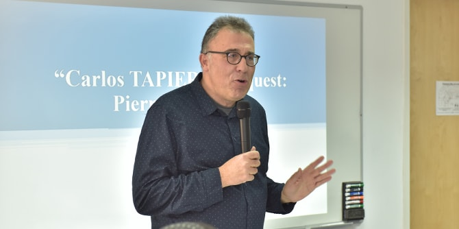

השותפות עם בוגרי תוכניות מנדל השונות היא אחד היסודות החשובים בעבודת היחידה, וכוללת מגוון מפגשים בנושאים העומדים על סדר יומם של הבוגרים לשם חיזוק יכולתם לממש ולהטמיע את חזונם המקצועי. במסגרת זו נערך המפגש עם רבי קרלוס טפירו, שאירח בארץ את פורום המנכ"לים של תנועת מכבי העולמי בדרום אמריקה, ארה"ב ואירופה. במפגש השתתפו כ-30 מבכירי מוסדות ההנהגה היהודית של התנועה בארץ ובעולם, ובהם מנכ"ל התנועה, אייל טיברגר.
תוכני המפגש שילבו רובד תאורטי ורובד פרקטי וגובשו בשותפות עם טפירו, ששיתף באתגרים של ראשי התנועה: חיבור הצעירים למוסדות ולמסגרות המסורתיות והקושי לבנות את הגשר בין העולם הישן לדור החדש.
את האירוע פתח
מר משה ויגדור, מנכ"ל קרן מנדל-ישראל, שסיפר על עשייתה של הקרן ועל החזון שלה.
פרופ' פייר קלץ, ראש המחלקה לניהול ומדיניות ציבורית באוניברסיטת בן-גוריון ומייסד תוכנית ה-MBA למנהיגות חברתית בשיתוף עם קרן מנדל, הרצה על השלכותיהן של ההתפתחויות הטכנולוגיות על הדור הנוכחי, תיאר את מאפייניו והפריך סטריאוטיפים רווחים לגביו.

ד"ר גרניט אלמוג-ברקת, מנהלת יחידת בוגרי מנדל, הציגה מודלים של ניהול ומנהיגות ולימדה מתודה לשיתוף עמיתים בדילמות ניהוליות. זאת במענה לקושי שהביעו כמה מן המשתתפים. לדבריהם, לעתים קרובות הם חשים בדידות בשל היותם בעמדת מקבל החלטות יחיד או בשל האחריות הגדולה הרובצת עליהם. המנהלים נחלקו לקבוצות ותרגלו את הכלי הניהולי שלמדו.
לאחר מכן נפגשו מנכ"לי תנועת מכבי עם בוגרי בית ספר מנדל למנהיגות חינוכית, ואלה סיפרו להם על חזונם, על יוזמותיהם ועל עשייתם.
פרופ' יוני מזרחי, בוגר מחזור א', מומחה למערכות מידע וראש החוג לסוציולוגיה ואנתרופולוגיה במכללה האקדמית עמק יזרעאל, שוחח עם המשתתפים על האבולוציה של המציאות המדומה, על טבעה של הדיגיטליות ועל חשיבותה של אסטרטגיה דיגיטלית עבור ארגונים.
נעמי עיני, בוגרת מחזור כ"ב, פסיכולוגית חינוכית ויזמית, הציגה גישה המעודדת הפקה של תובנות וכישורי חיים המתבססת על ארון הספרים היהודי ונשענת על ידע וכלים הלקוחים מעולם הפסיכולוגיה – גישה שיכולה לסייע לגשר בין עולם המסורת לעולם המודרני.
מנדי (מנחם) רבינוביץ', בוגר מחזור י', מנהל קמפוס "בית בירם" בבית הספר הריאלי בחיפה, דיבר על אתגרי הזהות היהודית הציונית בצפון אמריקה בהווה ובעתיד וסיפר על העשייה שלו בנושא חינוך לזהות יהודית ובפרויקט colab של הפדרציה היהודית של ניו יורק.
צפורה גוטמן, בוגרת מחזור כ"ד, מייסדת ומנהלת "כפר שירה", סיפרה על יוזמת הקמת הכפר, שהחלה כרעיון לפרויקט שלה במהלך לימודיה בבית ספר מנדל למנהיגות חינוכית, ובתום לימודיה הקימה אותו הלכה למעשה. כפר שירה הוא כפר נוער ייעודי לנערות המגיעות מבתים חרדיים שבחרו בדרך אחרת ונפלטו מהקהילה. הכפר מהווה מסגרת ייחודית ויחידה בקהילה החרדית ובו זוכות הצעירות לחינוך ברמה גבוהה (בגרות מלאה), לצד לימודי קודש עשירים וסביבה תומכת.
ד"ר מרים קורקוס פאנויאן, בוגרת מחזור ז' ומנהלת מחלקת החינוך במועצה המקומית זיכרון יעקב, שוחחה עם המשתתפים על הקשר הרב-דורי בין מנהיגות צעירה מתהווה למנהיגות מובילה בוגרת, ועל החיבור שנעשה באמצעות מערכת החינוך בזיכרון יעקב בין יזמות ומרכזי מייקרים לסיפורי העבר ולהיסטוריה המקומית.
אודיה ברקן, בוגרת מחזור כ"ב, מוזיקאית ומרכזת המגמה למוזיקה יהודית ולמוזיקה ערבית בביה"ס למוזיקה בקריה האקדמית אונו, סיפרה על המוזיקה כמחברת בין עולמות ועל האתגר שבמציאת ממשקים בין המגמות לצד שמירה על הזהויות השונות.
מיכאל קרסנר, בוגר מחזור כ"ד, מנהל מרכז המוזיקה והמחול "גוננים", סיפר על חזונו להפוך אותו למרכז קהילתי שיהווה הן מקום למצוינות אומנותית והן "מדורת שבט" לקהילה. מיכאל שיתף באתגר הנובע מרצונו לשלב בין שתי התפיסות: הקפדה על מצוינות אומנותית, ומאידך – הנגשת האומנות לקהל הרחב כחלק מתרבות הפנאי וכאמצעי להתפתחותו הכללית של כל אדם. אודיה ומיכאל ניגנו שלושה קטעים מוזיקליים להנאת המשתתפים.
את יום הלמידה תכננו והובילו
ד"ר גרניט אלמוג-ברקת, מנהלת יחידת בוגרי מנדל, ואיילה בבלי, מנהלת העריכה ביחידה.

{kind=link}
{kind=link}
{kind=link}